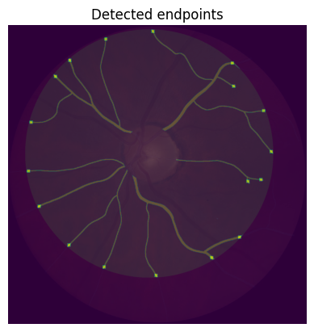

PVBM Tutorial
Import the libraries
[24]:
%load_ext autoreload
%autoreload 2
The autoreload extension is already loaded. To reload it, use:
%reload_ext autoreload
[25]:
from PIL import Image,ImageFilter #Import Pillow library to load the images
import numpy as np #Import numpy
import matplotlib.pyplot as plt #Import matplotlib library for visualization
from skimage.morphology import skeletonize,square,dilation #Import functions to compute morphological operations
Download the example images
[26]:
image1 = "117-793-749-000036_RR_43001_04734_F_48.png"
image2 = "121-691-760-V721942_RR_63739_04251_M_74.png"
[27]:
import os
os.system('wget -P images https://raw.githubusercontent.com/aim-lab/PVBM/main/images/{}'.format(image1))
os.system('wget -P images https://raw.githubusercontent.com/aim-lab/PVBM/main/images/{}'.format(image2))
--2023-04-30 14:24:18-- https://raw.githubusercontent.com/aim-lab/PVBM/main/117-793-749-000036_RR_43001_04734_F_48.png
Résolution de raw.githubusercontent.com (raw.githubusercontent.com)… 185.199.111.133, 185.199.110.133, 185.199.109.133, ...
Connexion à raw.githubusercontent.com (raw.githubusercontent.com)|185.199.111.133|:443… connecté.
requête HTTP transmise, en attente de la réponse… 200 OK
Taille : 16773 (16K) [image/png]
Sauvegarde en : « images/117-793-749-000036_RR_43001_04734_F_48.png.1 »
0K .......... ...... 100% 163K=0,1s
2023-04-30 14:24:19 (163 KB/s) — « images/117-793-749-000036_RR_43001_04734_F_48.png.1 » sauvegardé [16773/16773]
--2023-04-30 14:24:19-- https://raw.githubusercontent.com/aim-lab/PVBM/main/121-691-760-V721942_RR_63739_04251_M_74.png
Résolution de raw.githubusercontent.com (raw.githubusercontent.com)… 185.199.110.133, 185.199.109.133, 185.199.108.133, ...
Connexion à raw.githubusercontent.com (raw.githubusercontent.com)|185.199.110.133|:443… connecté.
requête HTTP transmise, en attente de la réponse… 200 OK
Taille : 21363 (21K) [image/png]
Sauvegarde en : « images/121-691-760-V721942_RR_63739_04251_M_74.png.1 »
0K .......... .......... 100% 24,5M=0,001s
2023-04-30 14:24:20 (24,5 MB/s) — « images/121-691-760-V721942_RR_63739_04251_M_74.png.1 » sauvegardé [21363/21363]
[27]:
0
Load an image
[28]:
segmentation_path = "images/"+image1 #replace image1 by image2 if you want to use the second example
[29]:
segmentation = Image.open(segmentation_path) #Open the segmentation
[31]:
plt.imshow(segmentation,cmap = "gray") #Display the segmentation
plt.title("Segmentation")
plt.show()

[32]:
# Depending on the quality of the segmentation, you would need to regularize (smooth) it more or less
#before computing the skeleton for instance by uncomment the following command
#segmentation = segmentation.filter(ImageFilter.ModeFilter(size=3))
segmentation = np.array(segmentation)/255 #Convert the segmentation to a numpy array with value 0 and 1
skeleton = skeletonize(segmentation) # Compute the skeleton of the segmentation
[33]:
plt.imshow(skeleton,cmap = 'gray')
plt.title("Segmentation skeleton")
plt.show()

Compute the area
[34]:
from PVBM.GeometricalAnalysis import GeometricalVBMs #Import the geometrical analysis module
geometricalVBMs = GeometricalVBMs() #Instanciate a geometrical VBM object
[36]:
a = geometricalVBMs.area(segmentation)
print("The area is {}".format(a))
The area is 74718.0
Compute the endpoints and intersection points
[37]:
n_end,n_inter,end,inter = geometricalVBMs.compute_particular_points(skeleton)
print("There is {} endpoints and {} intersection points".format(n_end,n_inter))
There is 15 endpoints and 49 intersection points
[39]:
#Dilation of the endpoints and intersection points for vizualisation
end_dilated = dilation(end, square(15))
inter_dilated = dilation(inter, square(15))
[40]:
plt.imshow(segmentation/10+end_dilated)
plt.title('Endpoints')
plt.show()

[41]:
plt.imshow(segmentation/10+inter_dilated)
plt.title("Intersection points")
plt.show()

[43]:
plt.imshow(segmentation/10+inter_dilated+end_dilated)
plt.title("Particular points")
plt.show()

Compute the tortuosity and the length
[44]:
median_tor, length,tor,l,connection_dico = geometricalVBMs.compute_tortuosity_length(skeleton) #times depends in the resolution of the segmentation (smaller is faster)
[45]:
print("The median tortuosity is {}".format(median_tor))
The median tortuosity is 1.076613673789134
[46]:
print("Here is the list containing the arc-chord ratio of every blood vessels (between two particular points) {}."
.format(tor[:3]))
print("We can recompute the median tortuosity like this : {}".format(np.median(tor)))
Here is the list containing the arc-chord ratio of every blood vessels (between two particular points) [1.0326649560373642, 1.0644018448727424, 1.0737362316643277].
We can recompute the median tortuosity like this : 1.076613673789134
[47]:
print("The length is {}".format(length))
The length is 7934.592780435798
[48]:
print("Here is the list containing the length of every blood vessels (between two particular points) {}."
.format(l[:3]))
Here is the list containing the length of every blood vessels (between two particular points) [2.8284271247461903, 6.242640687119285, 2].
[49]:
fig = plt.figure(figsize=(5,5))
for key,values in connection_dico.items():
x1,y1 = key
for value in values:
x2,y2 = value[0][0],value[0][1]
x_ = (x1,x2)
y_ = (y1,y2)
plt.plot(y_,x_, color="red", linewidth=1)
plt.imshow(segmentation,cmap = 'gray')
plt.title('Linear interpolation of the segmentation that was used to compute the length and the tortuosity')
plt.show()

Compute the perimeter
[50]:
p,border_matrix = geometricalVBMs.compute_perimeter(segmentation.T) #times depends in the resolution of the segmentation (smaller is faster)
[51]:
print("The perimeter is {}".format(p))
The perimeter is 16263.704463579805
[52]:
plt.imshow(border_matrix,cmap = "gray")
plt.title("Edge of the segmentation")
plt.show()

Branching angles
[53]:
mean_ba,std_ba,median_ba,angle_dico,centroid = geometricalVBMs.compute_branching_angles(skeleton)
/Users/jonathanfhima/Desktop/PVBMRelease/PVBM/helpers/branching_angle.py:151: RuntimeWarning: invalid value encountered in double_scalars
cosine_angle = np.dot(ba, bc) / (np.linalg.norm(ba) * np.linalg.norm(bc))
[54]:
mean_ba,std_ba,median_ba
[54]:
(93.68170612379406, 37.730154406140876, 81.38508303417835)
[55]:
fig = plt.figure(figsize=(5,5))
for points,angle in angle_dico.items():
b,a,c = points
if True:
if angle > 90 :
x_ = [b[0],a[0]]
y_ = [b[1],a[1]]
plt.plot(y_,x_, color="red", linewidth=1)
x_ = [b[0],c[0]]
y_ = [b[1],c[1]]
plt.plot(y_,x_, color="red", linewidth=1)
if angle < 90 :
x_ = [b[0],a[0]]
y_ = [b[1],a[1]]
plt.plot(y_,x_, color="green", linewidth=1)
x_ = [b[0],c[0]]
y_ = [b[1],c[1]]
plt.plot(y_,x_, color="green", linewidth=1)
plt.imshow(skeleton,cmap = 'gray')
plt.show()

The centroid can also be ploted (independent for each subgraph)
[56]:
plt.imshow(dilation(centroid,square(10)))
plt.title("Centroid of each subgraph")
plt.show()

Lets extract each subgraph and their centroid
[57]:
graphs = 1*(centroid != -1)
[58]:
from queue import PriorityQueue
def iterative(A, B, i, j, n):
pq = PriorityQueue()
pq.put((0,A,B,i,j,n))
priotities = [0,1,2,3,4,5,6,7]
while not pq.empty():
_,A, B, i, j, n = pq.get()
directions = [(i-1,j),(i+1,j),(i,j-1),(i,j+1),(i-1,j-1),(i-1,j+1),(i+1,j-1),(i+1,j+1)]
for direction,priority in zip(directions,priotities):
x,y = direction
if x >= 0 and x < A.shape[0] and y >= 0 and y < A.shape[1] and A[direction] == 1:
B[direction] = n
A[direction] = 0
pq.put((priority,A,B,direction[0],direction[1],n))
[59]:
from tqdm.notebook import tqdm
def extract_subgraphs(graphs):
B = np.zeros_like(graphs)
n = 1
for i in tqdm(range(graphs.shape[0])):
for j in range(graphs.shape[1]):
if B[i,j] == 0 and graphs[i,j] == 1:
iterative(graphs,B,i,j,n)
n+=1
return B
[60]:
B = extract_subgraphs(graphs.copy())
[61]:
plt.imshow(dilation(B*100,square(10)))
plt.title("The subgraphs are in different color")
plt.show()

[62]:
for i in range(1,B.max()+1):
mask = B == i
sub_skeleton = skeleton * mask
sub_centroid = centroid * mask
sub_centroid_tmp = sub_centroid.copy()
sub_centroid_tmp[sub_centroid_tmp == 0 ] = np.inf
detected_centroid = sub_centroid_tmp == sub_centroid_tmp.min()
plt.imshow(dilation(sub_skeleton,square(10)) + 10*dilation(detected_centroid,square(30)))
plt.title("Centroid of the graph number {}".format(i))
plt.show()

Fractal Analysis
[63]:
from PVBM.FractalAnalysis import MultifractalVBMs
fractalVBMs = MultifractalVBMs(n_rotations = 25,optimize = True, min_proba = 0.0001, maxproba = 0.9999)
[64]:
D0,D1,D2,SL = fractalVBMs.get_fundus_biomarkers(segmentation)
[65]:
print("The fractal biomarkers are D0: {}, D1: {}, D2: {}, SL: {}".format(D0,D1,D2,SL))
The fractal biomarkers are D0: 1.3108560242559306, D1: 1.2990298019085615, D2: 1.2969899646342158, SL: 0.7232841382079696